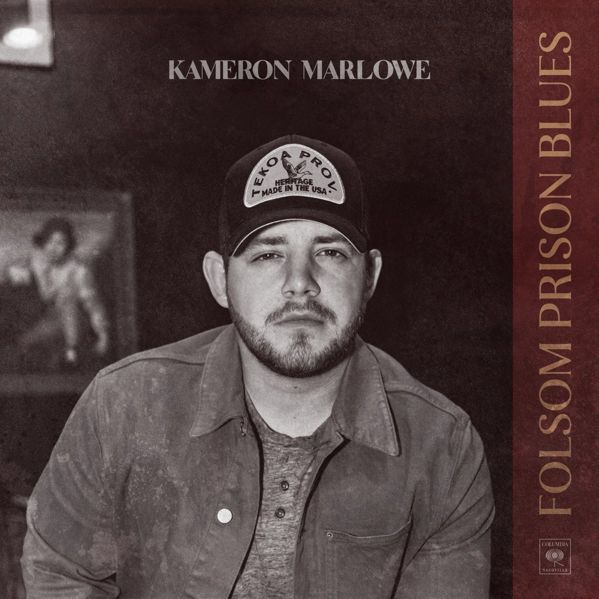
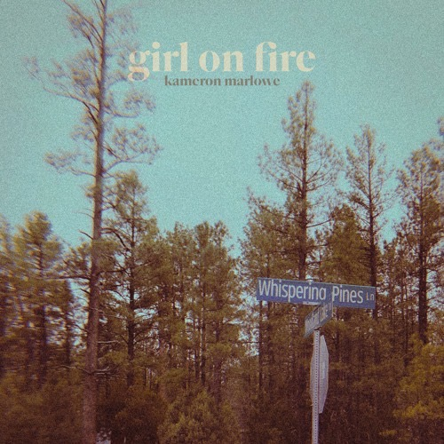
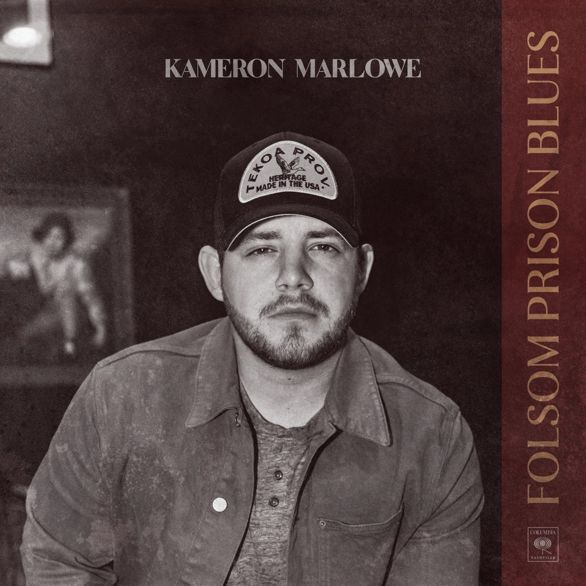
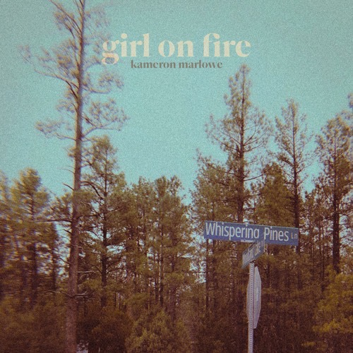
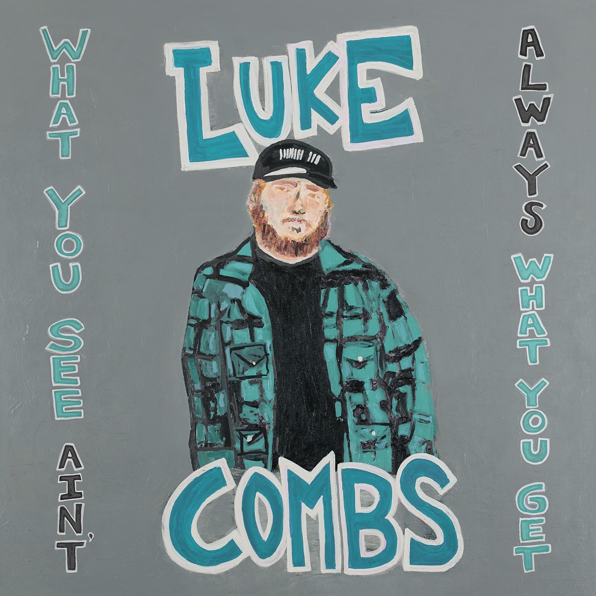
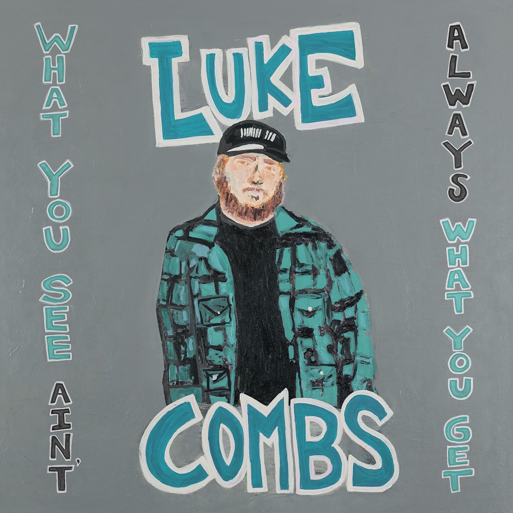

Morgan Wallen, country music singer and songwriter, was born on May 13th, 1993, in Sneedsville, Tennessee. While growing up, Morgan aspired to play baseball in college but after an elbow injury, he chose to pursue music. In 2014, Morgan Wallen competed in Season 6 of The Voice, but was eliminated during playoffs. He then went on to release his first EP in 2015. While still co-creating music with other country artists, Morgan was working on albums of his own, realeasing his debut album If I Know Me, in 2018. It was in August of 2020 that If I Know Me reached #1 on the Top Country Albums chart. After that, Morgan released Dangerous: The Double Album which also remained atop the Billboard 200 chart. This album became the only country album in the 64-year history of the Billboard 200 to spend its first 7 weeks in the number 1 spot. My top 3 favorite Morgan Wallen songs include:
- Whiskey Glasses
- More Suprised Than Me
- You Proof


 



 
